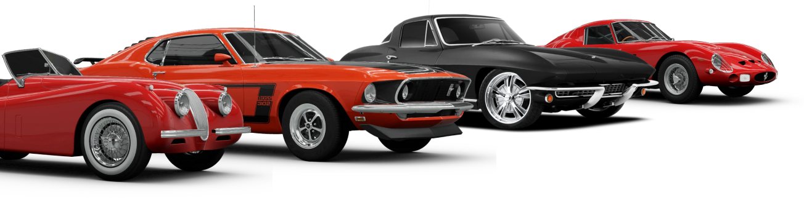

Inicio
Sobre
História
Teste
Carros

Você já imaginou se transformar em um carro? Bem, enquanto isso pode não ser possível na vida real, eu tenho um teste divertido que vai te ajudar a descobrir que carro você seria enquanto aprende!
Descubra seu Carro